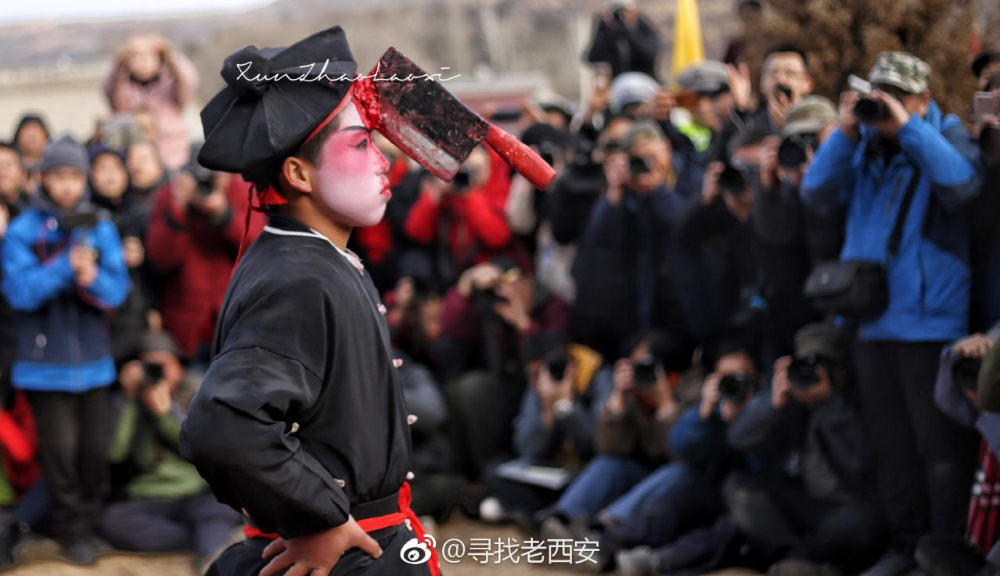
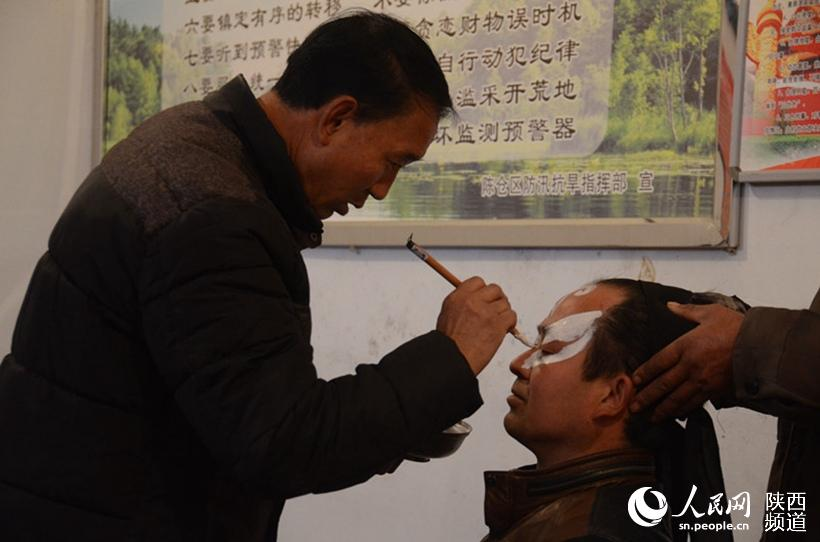
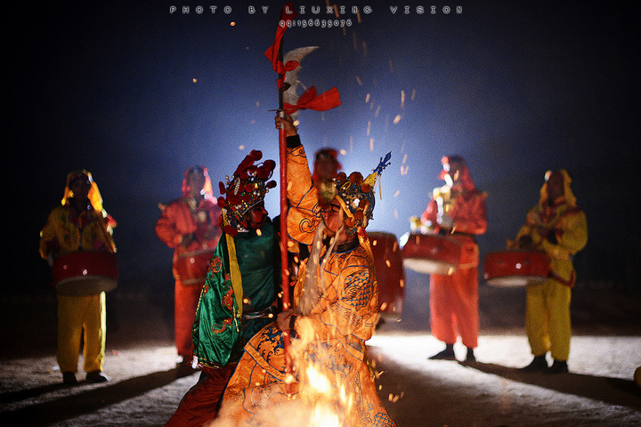

血腥、暴力、恐怖......是第一次看血社火的人普遍拥有的感受。或许你在第一次接触血社火时，也不禁会想：如此阴森恐怖的表演为何会是第一批被列入国家级非物质文化遗产名录的民俗文化？血社火的表演真的只是为了恐吓吗？但事实并非如此，接下来，请跟随我们的脚步，从学术的角度去探究血社火“阴森恐怖”的背后秘密。
“血社火”，当地人将其称为“快活”或者“扎快活”，其表演场面十分血腥恐怖。在表演时，我们经常看到演员的脸上、眼睛上被“扎”入了斧头、剪刀、镰刀等“凶器”，鲜血喷溅。
从民俗学的视角来看，这种视觉上的“血腥恐怖”并非血社火的文化内核，只是传达惩恶扬善价值观的一种方式。民俗学研究普遍认为，血社火运用极具视觉冲击力的方式，使得抽象的善恶观念能够直接影响观看者。
在传播学中，血社火的这种传达价值观念的方式又被称为恐惧诉求或者恐吓性诉求，该诉求通过呈现负面效果与某种行为的关联性来唤起受众的恐惧情绪进而达到改变受众态度行为的效果。简单来说，血社火“血腥恐怖”的场面就是负面效果的呈现，而其目的就是为了传递惩恶扬善、除暴安良的传统价值观念。
从起源看，血社火与上过时期的“傩仪”一脉相承。我们的祖先认为，表演者如果在表演时能够戴上面具、做出夸张恐怖的表情，那就可以起到驱赶疫鬼、保佑地方平安。血社火正式这种古老信仰的活态传承与演化。它的社会功能除了娱乐之外，还有教化、凝聚、祈福等。
所谓教化，血社火用一种视觉上直白的方式，向村民（在教育普及之前，很多村民的文化程度是有限的，包括现在还有很多村民的文化水平依旧不高）昭示了“善有善报，恶有恶报”的朴素价值观。
所谓凝聚，血社火的展演是依托于集体的，更具体来说，它是依靠整个村落的。整个村落共同筹备、参与和观看，在这个过程中，村民集体的身份认同感和凝聚力也在不断增强。
至于祈福，血社火通过惩治“恶”的形象，来祈求新的一年风调雨顺、人畜安康。
总结来说，血社火的“恐怖”只是其外衣，而驱邪纳福、惩恶扬善的朴素价值观念才是其跳动不息的心脏。它并非以血腥为乐，而是试图用一个极致的表达方式，去告诉我们一个最朴素的道理：对邪恶的零容忍，就是对善良的最大保护。
